Анна Селезнёва
Анна Селезнёва
Ведущий фронтенд-разработчик в Spiral Scout
Соорганизатор сообществ MinskCSS, MinskJS, BeerJS
#freehugs
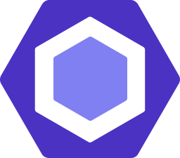
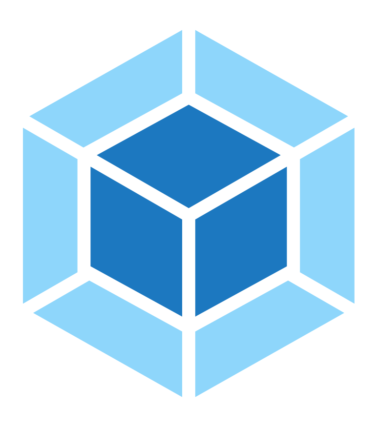
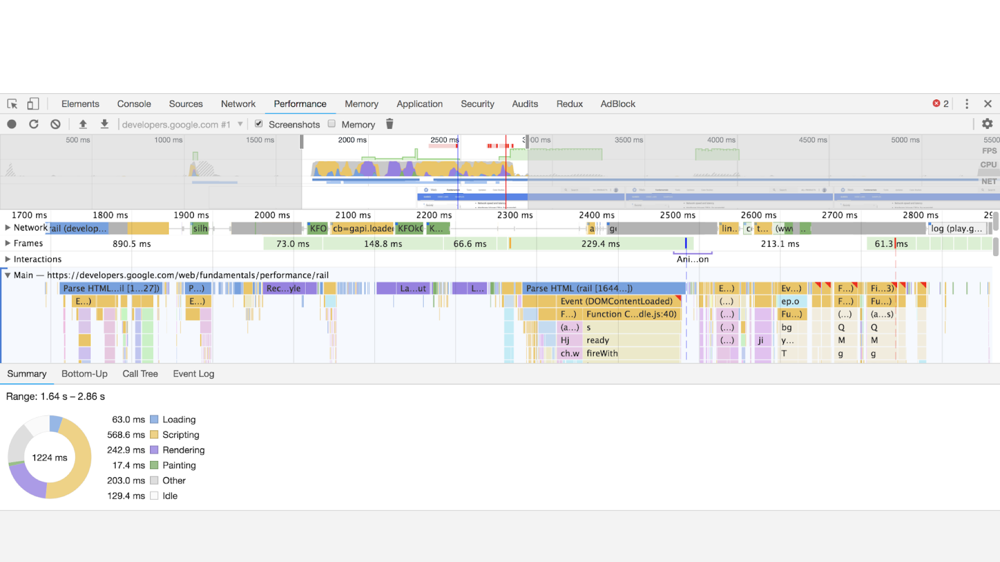
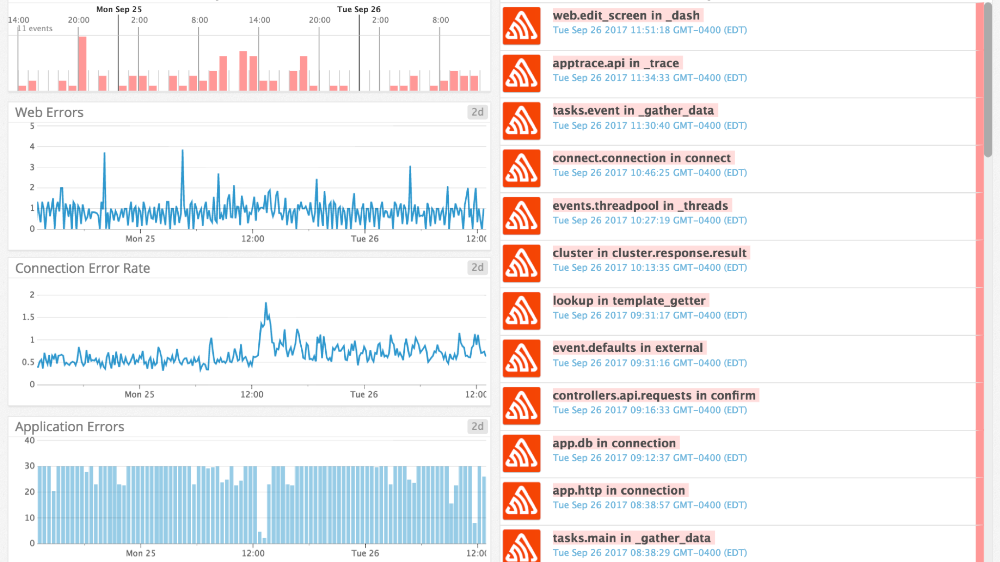
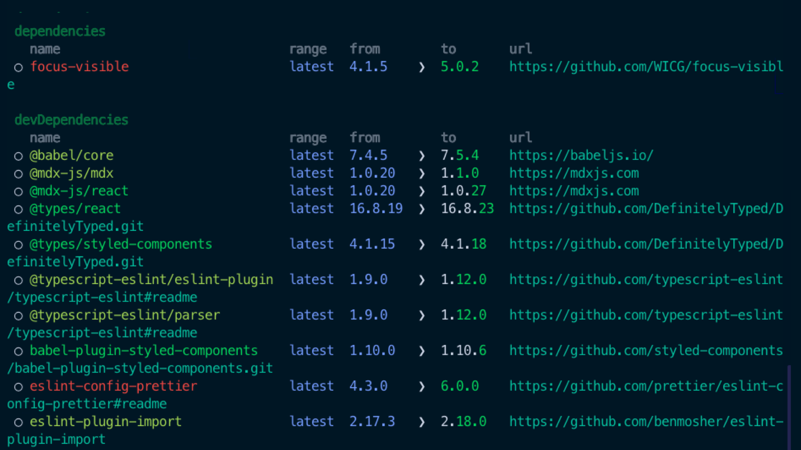
Девопс —методология взаимодействия специалистов по разработке со специалистами по информационно-технологическому обслуживанию и интеграцию их рабочих процессов друг в друга для обеспечения качества продукта.
Front End Development
+
Operations
=
Front End OpsDevOps
Фронтопс — это мост между целью приложения
и его реальностью
Фронтопс — это тот, кто поставляет в компанию лучшие инструменты и практики, помогая разработчикам эффективно сосредоточиться на своей работе и обеспечивая высокое качество кода и производительность
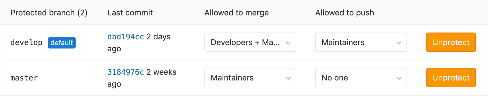
package.json:
"husky": {
"hooks": {
"pre-commit": "yarn lint && yarn test",
}
}
$ git config core.autocrlf false
"devDependencies": {
"typescript": "^3.7.2",
},
"dependencies": {
"react": "^16.12.0",
},
package-lock.json
yarn.lock
Использование:
$ npm ci
$ yarn
const express = require('express');
const app = express();
const middleware = require('./middleware');
middleware(app, config);
app.listen(port, host, async (err) => {
...
});
[*]
end_of_line = lf
insert_final_newline = true
indent_style = space
indent_size = 2
charset = 'utf-8'
trim_trailing_whitespace = true
module.exports = {
extends: ["airbnb-typescript"],
parser: '@typescript-eslint/parser',
parserOptions: {
ecmaVersion: 2018,
...
};
{
"extends": "stylelint-config-standard"
}
module.exports = {
...
devtool: /* Карты кода */,
plugins: /* Необходимые плагины */,
optimization: /* Настройка оптимизации */,
...
};
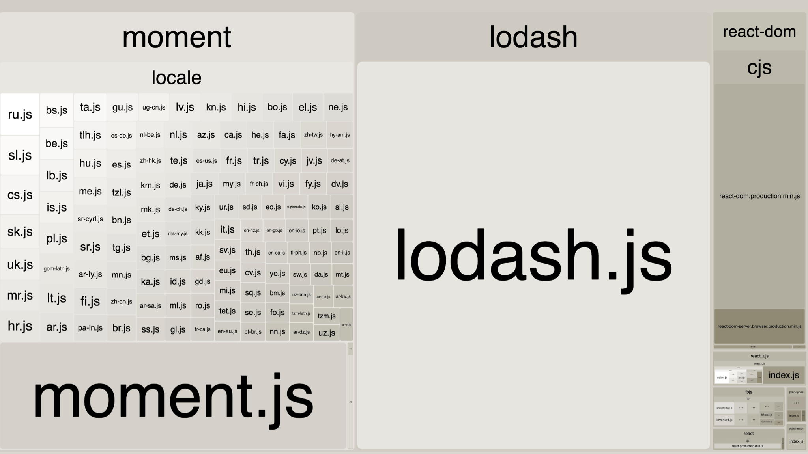
DB_HOST=127.0.0.1
DB_USER=root
DB_PASSWORD=password
STRIPE_SECRET_KEY=secret
GOOGLE_API_KEY=value
module.exports = {
preset: 'ts-jest',
...
};
yarn installyarn builddist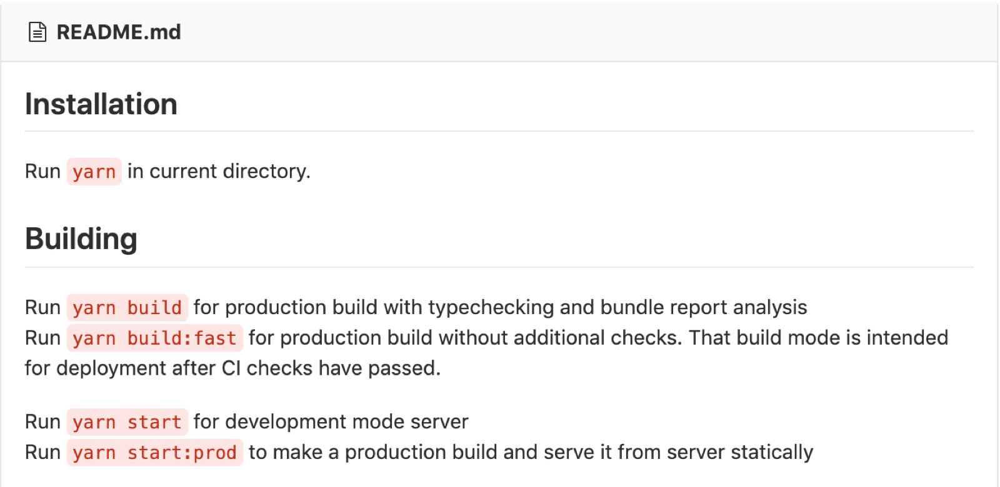
import * as Sentry from '@sentry/browser';
Sentry.init({ dsn: `https://${key}@sentry.io/${project}` });
// Использование:
try { ... } catch (err) {
Sentry.captureException(err);
}
Актуальность:yarn outdated
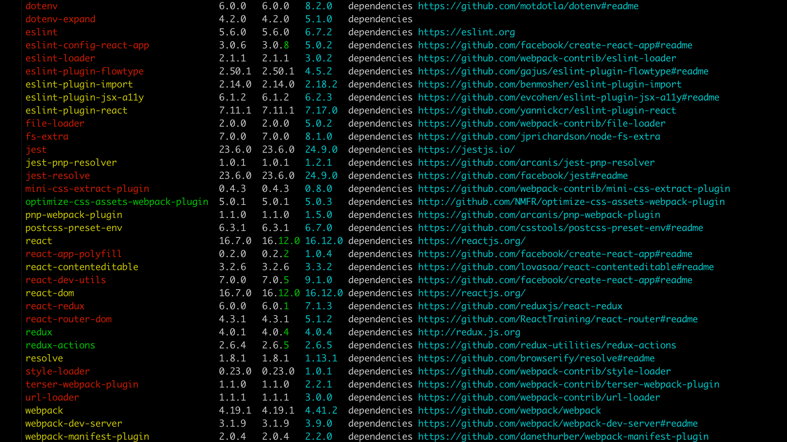
Актуальность:yarn outdated
Уязвимость:yarn audit
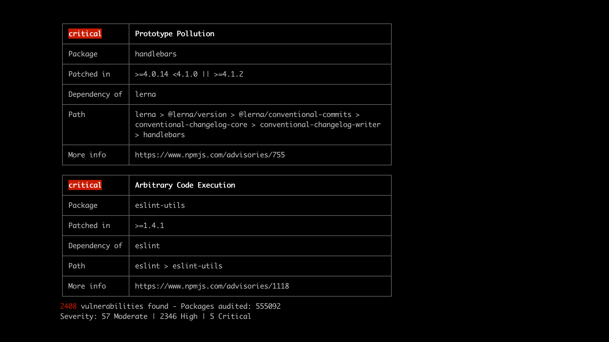
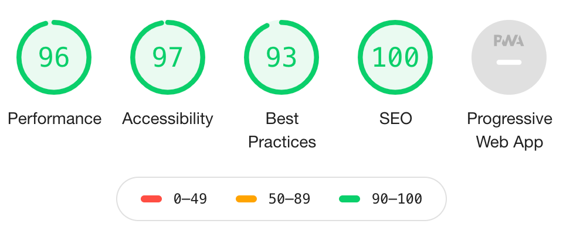
language: node_js
node_js:
- 10 # use Node 10 LTS or later
before_install:
- npm install -g @lhci/cli@0.3.x
script:
- npm run build # build your site
- lhci autorun # run lighthouse CI
addons:
chrome: stable # make sure you have Chrome available
+ запуск новых проектов:
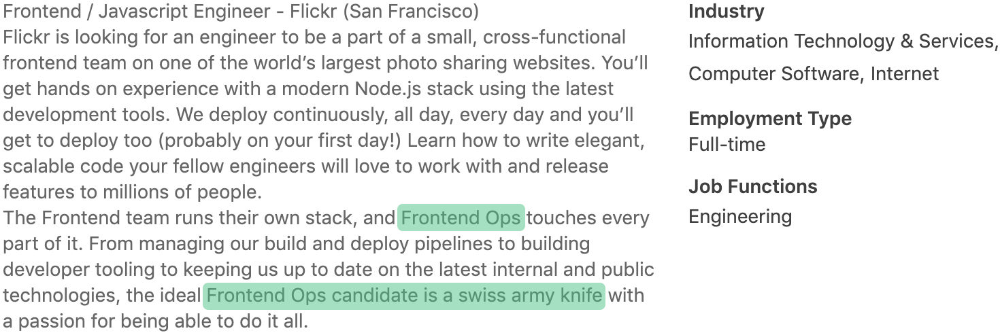
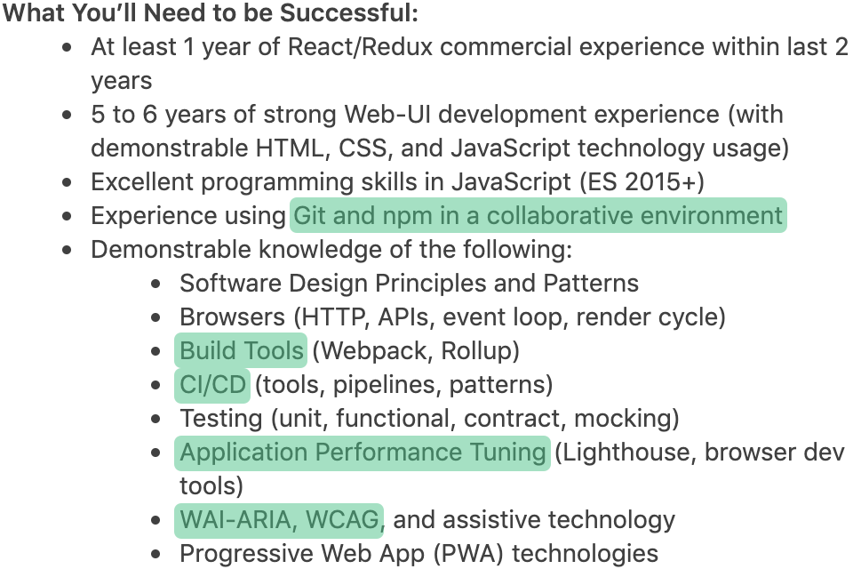
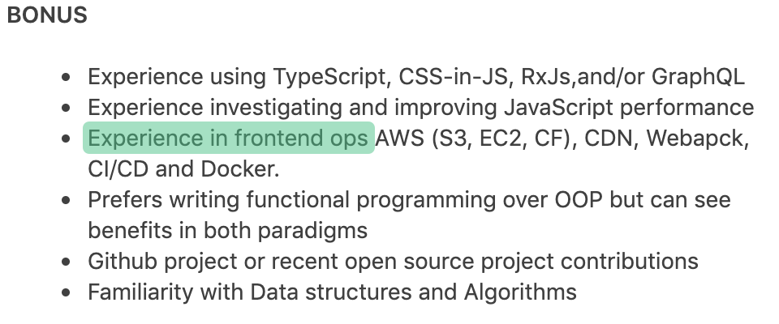
Мы, как фронтендеры, заботимся о пользователях.
От того, насколько доволен пользователь, напрямую зависит успешность проекта.
yarn audit, yarn outdated)webpack-bundle-analyzer)git config, pre-commit)yarn audit--fix, yarn outdated)webpack-bundle-analyzer)Слайды: askd.rocks/pres/frontops
#freehugs